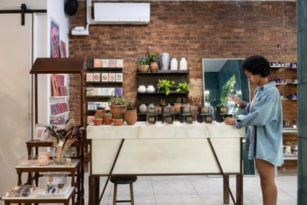

N ilea Alexander and her husband, Lamine Diagne, started out with a neighborhood coffee shop in Crown Heights, Brooklyn. Over the past decade, though, their modest enterprise has evolved into what they call “an experience”. Next door to Café Rue Dix, which serves Senegalese cuisine, pastries and lattes, is Marché Rue Dix, their marketplace-boutique stocked with goods sourced directly from Senegal , Diagne’s birthplace. The couple’s goal is to create a one-stop destination where customers leave with both a story and a piece of Senegal.
Rue Dix, or “10th Street” in French, is a nod to Diagne’s roots in Pikine, a city to the east of the Senegalese capital of Dakar. “Markets are very big in Senegal,” he said. Visitors to the cafe can order its signature dish, thiebou jen – a savory blend of jollof rice, vegetables and red snapper stew. And then they can head to the boutique, which offers everything from traditional Ataya tea and an asymmetric crochet skirt to a gilded brass arm cuff and a bucket bag made from rope and plastic.
Alexander, 43, originally from Atlanta, moved to Brooklyn in 2002, after graduating college. Diagne, 46, arrived in New York from Senegal at age 14. The couple married in 2011 and soon settled in Crown Heights. Back then, Diagne would ride his scooter to Harlem’s Le Petit Sénégal area to find the flavors of home. Though a few popular spots like Le Baobab on Fulton Street offered west African food, the pair wanted to create a space where Brooklynites could find a Senegalese menu without making a daylong excursion of it. “Prior to Lamine, I hadn’t eaten much Senegalese food and didn’t understand the nuances of African cuisine,” said Alexander. “We figured if we had to leave the neighborhood for it, maybe other people did, too.”
Navigating the complexities of New York City’s permit process and a raft of retail hurdles with limited capital proved difficult. But their backgrounds served them in good stead.
Diagne had honed his culinary skills as a cook at the Soho bistro L’Orange Bleue; Alexander had spent over a decade in retail at Urban Outfitters and selling vintage goods at Brooklyn Flea. And now, while she oversees the boutique’s decor and product curation, Diagne manages the cafe. In 2018, the pair added an in-shop nail studio, which they call a “love letter to the Black femmes who came before us and pioneered nail artistry”. The studio specializes in striking nail extensions embellished with gold, neon and geometric designs.
A worker arranges merchandise at Marché Rue Dix.Photograph: Maria Spann/The Guardian
Just last month, they expanded their offerings: the pair opened an in-boutique hair salon focused on natural styles and braiding. “Retail taught me that things happen in ebbs and flows, but with experiences, you can keep people coming back,” said Alexander.
What was the biggest obstacle you faced opening a business?
Alexander: The buildout was the hardest thing for us. It took much longer than we thought. When you’re working on a restaurant, you have to be involved with the department of buildings, the new business association and the department of health. There were so many layers that can cause delays.
Diagne: Our biggest problem was a lack of experience. When we opened, we were at two fat zeros. No more money [laughs].
How do you curate the goods for Marché Rue Dix?
Alexander: Senegal is always the base. When I first visited in 2012, I was overwhelmed by the visuals, the sense, the smell, the fabrics. We started off selling coffee, tea and incense in the restaurant. The coffee is from the city of Tuba, made with pepper and spices. People went on and on about our hot sauce, so we started bottling it. We started bringing items back from Senegal. Then I started designing myself and launched our DSS-to-JFK line – named for the airports in Dakar and New York. That came from watching my husband and his family and friends who grew up here and have that New York swagger but are still very Senegalese.
How do the nail studio and hair salon fit into the Rue Dix experience?
Alexander: I’ve always been into services. I had a friend who was selling natural nail polish. I was carrying her brand at the shop, and she wanted to get into doing nails. In the beginning, I rented her a little two-seater right by the cash register. She ended up on a different career path, but I wanted to go all-in with it, so we moved the bathroom and put in a pedicure chair, and there was no turning back from there. As part of our expansion, we took on a third storefront we had our eye on before the economy started getting crazy.
New York state saw an 8.1% increase in new business applications at the top of 2024, which is encouraging to budding entrepreneurs. What advice would you give to them, especially those in Brooklyn?
Diagne: When things are slow, you go slow. When it’s high, you balance it out. It’s all about balance.
Alexander: Nothing is easy, and nothing is fast. Usually, when it’s fast, there’s a price for that. What I’ve learned about gen Z is that they’re willing to pay for experiences.
What’s the ultimate reward for you two as business owners?
Alexander: Having a business that can outlive us. My daughter can change her mind tomorrow, and that’s OK, but if you ask her today, she wants to be a business owner.